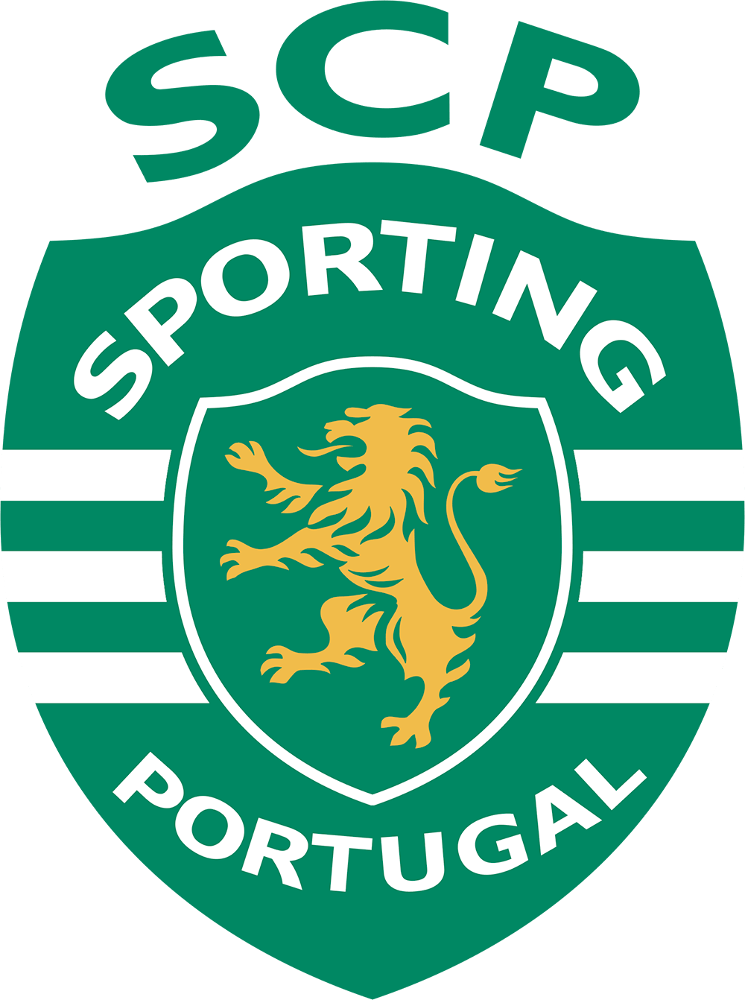
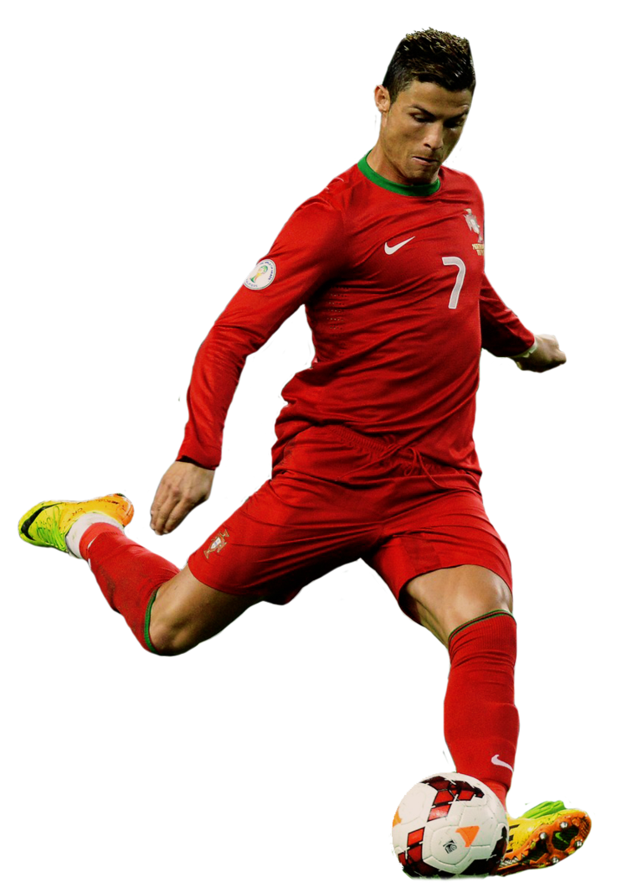

SPORTING
Supertaça de Portugal: 2002
MANCHESTER UNITED
Campeonato do Mundo de Clubes da FIFA: 2008
Liga dos Campeões da UEFA: 2007–08
Campeonato Inglês: 2006–07, 2007–08, 2008–09
Taça da Inglaterra: 2003–04
Taça da Liga Inglesa: 2005–06, 2008–09
Supertaça da Inglaterra: 2007, 2008
REAL MADRID
Campeonato do Mundo de Clubes da FIFA: 2014, 2016, 2017
Liga dos Campeões da UEFA: 2013–14, 2015–16, 2016–17, 2017–18
Supertaça da UEFA: 2014, 2016, 2017
Campeonato Espanhol: 2011–12, 2016–17
Taça do Rei: 2010–11, 2013–14
Supertaça da Espanha: 2012, 2017
JUVENTUS
2018–19, 2019–20
Supertaça da Itália: 2018, 2020
Copa da Itália: 2020–21

THE BEST
2008
2013
2014
2016
2017
CR7 NO REAL MADRID
2009 - 2018
Maior artilheiro de todos os tempos do Real Madrid
Cristiano Ronaldo faz parte do legado do Real Madrid e será para sempre lembrado como um dos grandes ícones da história do clube. Foi apresentado no Santiago Bernabéu a 6 de Julho de 2009, onde se juntaram Eusebio e Alfredo Di Stéfano, e desde esse dia os golos não paravam de aparecer. Ele marcou 451 vezes em 438 jogos oficiais com o Real Madrid (média de mais de um gol por jogo). Registou-se em todas as competições que disputou: 312 na Liga, 105 na Liga dos Campeões, 22 na Taça do Rei, seis no Mundial de Clubes, quatro na Supertaça de Espanha e dois na Supertaça Europeia
Ao longo de suas nove temporadas como jogador do Real Madrid, Ronaldo garantiu uma série de recordes impressionantes: o maior artilheiro de todos os tempos do clube, o maior artilheiro da história da Copa da Europa (ele marcou 105 gols pelo Real Madrid na Liga dos Campeões); o melhor marcador madridista de sempre na Liga (312); maior número de jogos em que um jogador marcou três ou mais vezes na história da LaLiga (34); e o maior número de gols marcados por um jogador do Real Madrid em uma única temporada (61).
Durante sua passagem pelo clube, ele também conquistou o recorde de mais gols marcados em uma campanha da Liga dos Campeões (17) e terminou a competição como artilheiro em seis ocasiões. O presidente do clube, Florentino Pérez, o rotulou como "o herdeiro de Alfredo Di Stéfano" e, assim como Don Alfredo, deixou uma marca indelével na história do melhor clube do mundo.
SELEÇÃO PORTUGUESA
Desde a chegada do seu maior ídolo, país foi campeão europeu pela primeira vez e nunca mais ficou de fora da Copa
Ronaldo é o maior goleador da história da Seleção de Portugal e o maior goleador da história por seleções, tendo marcado 117 gols em 189 partidas desde a sua estreia em 20 de agosto de 2003.
